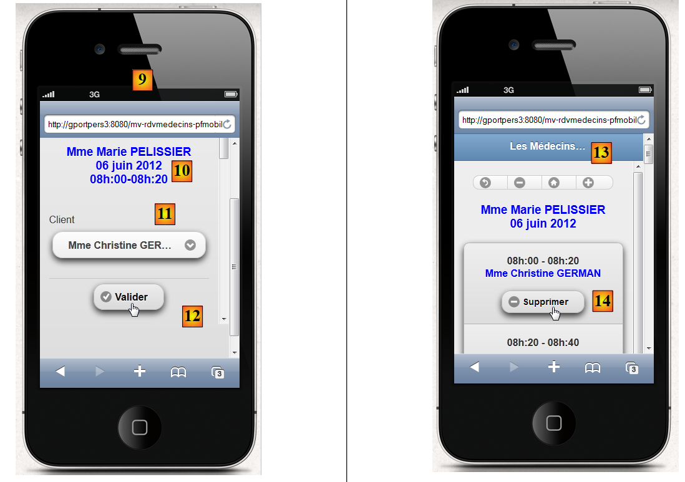
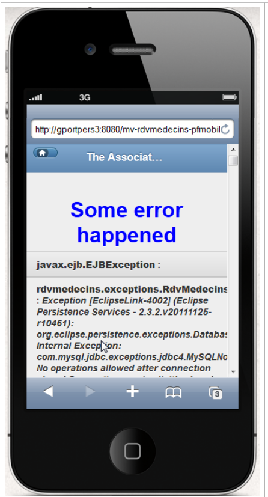
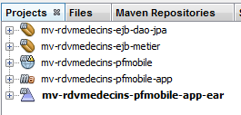
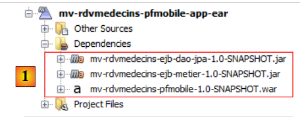
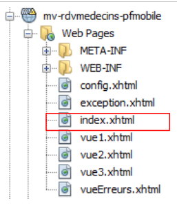
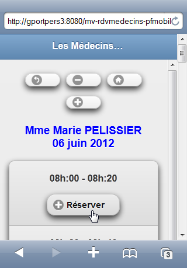
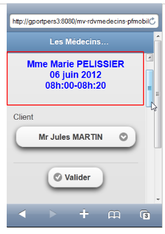
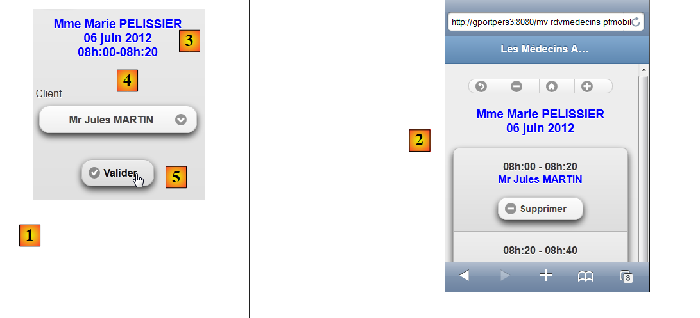
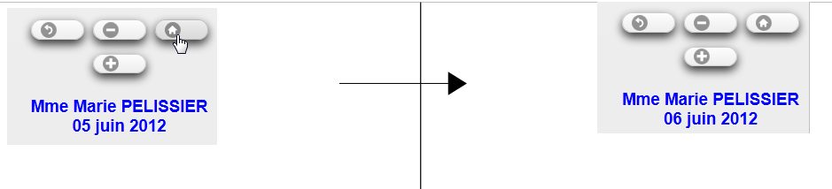

9. Beispielanwendung 05: rdvmedecins-pfm-ejb
Sehen wir uns die Struktur der für den GlassFish-Server entwickelten JSF/EJB-Beispielanwendung 01 an:
 |
Wir nehmen keine Änderungen an dieser Architektur vor, mit Ausnahme der Webschicht, die hier unter Verwendung von JSF, PrimeFaces und PrimeFaces Mobile implementiert wird. Als Zielbrowser wird ein mobiler Browser dienen.
 |
Wir haben zwei Anwendungen mit GlassFish entwickelt:
- Anwendung 01 verwendete JSF/EJB und hatte eine recht einfache Benutzeroberfläche,
- Anwendung 03 verwendete PF/EJB und hatte eine umfangreiche Benutzeroberfläche.
Aufgrund der begrenzten Anzahl an Komponenten, die in PrimeFaces Mobile verfügbar sind, werden wir zur einfachen Benutzeroberfläche von Anwendung 01 zurückkehren. Außerdem müssen sich die Ansichten an die geringe Bildschirmgröße mobiler Geräte anpassen können.
9.1. Die Ansichten
Um Ihnen einen Eindruck zu vermitteln, finden Sie hier einige Screenshots der Anwendung, die auf einem iPhone 4-Simulator läuft:
 |
- in [1] die Startseite. Beachten Sie, dass wir diesmal den Rechnernamen angeben mussten (Sie können auch dessen IP-Adresse eingeben), da bei Verwendung des localhost-Rechners nichts angezeigt wurde,
- in [2] das Dropdown-Menü für Ärzte,
- in [3] das gewünschte Datum für den Termin,
- in [4] die Schaltfläche zum Anzeigen des Tagesplans,
- in [5] zeigt die neue Ansicht die verfügbaren Zeitfenster des Arztes an,
- in [6] eine Reihe von Schaltflächen zur Navigation im Kalender,
- in [7] eine Meldung, die Sie an den Arzt und den Tag erinnert,
- in [8] ein Zeitfenster zur Buchung. Los geht's,
 |
- in [9] die Auswahlansicht des Kunden,
- in [10] eine Nachricht, die den Benutzer an den Arzt, den Tag und den Terminzeitraum erinnert,
- in [11] das Dropdown-Menü des Kunden,
- in [12] die Bestätigungsschaltfläche,
- in [13] führt ein Klick auf die Schaltfläche zurück zum Kalender,
- in [14] ist der belegte Terminblock nun reserviert. Wir werden nun die Reservierung löschen,
 |
- in [15] bleiben wir in derselben Ansicht,
- aber in [16] wurde der Termin gelöscht,
Auf der Startseite können Sie die Sprache ändern [17], [18], [19]:
 |
Abschließend haben wir eine Fehleransicht hinzugefügt:
 |
9.2. Das NetBeans-Projekt
Das NetBeans-Projekt sieht wie folgt aus:
 |
- [mv-rdvmedecins-ejb-dao-jpa]: EJB-Projekt für die [DAO]- und [JPA]-Schichten von Beispiel 01,
- [mv-rdvmedecins-ejb-metier]: EJB-Projekt für die [Geschäftslogik-]Ebene von Beispiel 01,
- [mv-rdvmedecins-pfmobile]: Projekt für die [Web]-Schicht / PrimeFaces Mobile – neu,
- [mv-rdvmedecins-pfmobile-app-ear]: Unternehmensprojekt zur Bereitstellung der Anwendung auf dem GlassFish-Server – neu.
9.3. Das Unternehmensprojekt
Das Unternehmensprojekt dient ausschließlich der Bereitstellung der drei Module [mv-rdvmedecins-ejb-dao-jpa], [mv-rdvmedecins-ejb-metier], [mv-rdvmedecins-pfmobile] auf dem GlassFish-Server. Das NetBeans-Projekt sieht wie folgt aus:
 |
Das Projekt dient ausschließlich diesen drei Abhängigkeiten [1], die in der Datei [pom.xml] wie folgt definiert sind:
<?xml version="1.0" encoding="UTF-8"?>
<project xmlns="http://maven.apache.org/POM/4.0.0" xmlns:xsi="http://www.w3.org/2001/XMLSchema-instance" xsi:schemaLocation="http://maven.apache.org/POM/4.0.0 http://maven.apache.org/xsd/maven-4.0.0.xsd">
<modelVersion>4.0.0</modelVersion>
...
<groupId>istia.st</groupId>
<artifactId>mv-rdvmedecins-pfmobile-app-ear</artifactId>
<version>1.0-SNAPSHOT</version>
<packaging>ear</packaging>
<name>mv-rdvmedecins-pfmobile-app-ear</name>
...
<dependencies>
<dependency>
<groupId>${project.groupId}</groupId>
<artifactId>mv-rdvmedecins-ejb-dao-jpa</artifactId>
<version>${project.version}</version>
<type>ejb</type>
</dependency>
<dependency>
<groupId>${project.groupId}</groupId>
<artifactId>mv-rdvmedecins-ejb-metier</artifactId>
<version>${project.version}</version>
<type>ejb</type>
</dependency>
<dependency>
<groupId>${project.groupId}</groupId>
<artifactId>mv-rdvmedecins-pfmobile</artifactId>
<version>${project.version}</version>
<type>war</type>
</dependency>
</dependencies>
</project>
- Zeilen 6–9: das Maven-Artefakt für das Unternehmensprojekt,
- Zeilen 14–33: die drei Abhängigkeiten des Projekts. Beachten Sie deren Typen (Zeilen 19, 25, 31).
Um die Webanwendung auszuführen, müssen Sie dieses Unternehmensprojekt ausführen.
9.4. Das PrimeFaces Mobile-Webprojekt
Das PrimeFaces Mobile-Webprojekt sieht wie folgt aus:
 |
- in [1] die Seiten des Projekts. Die Seite [index.xhtml] ist die einzige Seite des Projekts. Sie enthält fünf Ansichten: [vue1.xhtml], [vue2.xhtml], [vue3.xhtml], [vueErreurs.xhtml] und [config.xhtml],
- in [2] die Java-Beans. Die Bean [Application] hat Anwendungsbereich, und die Bean [Form] hat Sitzungsbereich. Die Klasse [Error] kapselt einen Fehler,
- in [3] die Nachrichtendateien für die Internationalisierung,
- in [4] die Abhängigkeiten. Das Webprojekt hängt vom EJB-Projekt für die [DAO]-Schicht, vom EJB-Projekt für die [Business]-Schicht und von PrimeFaces Mobile für die [Web]-Schicht ab.
9.5. Projektkonfiguration
Die Projektkonfiguration entspricht derjenigen der PrimeFaces- oder JSF-Projekte, die wir bereits behandelt haben. Wir führen die Konfigurationsdateien auf, ohne sie erneut zu erläutern.
 |  |
[web.xml]: Konfiguriert die Webanwendung.
<?xml version="1.0" encoding="UTF-8"?>
<web-app version="3.0" xmlns="http://java.sun.com/xml/ns/javaee" xmlns:xsi="http://www.w3.org/2001/XMLSchema-instance" xsi:schemaLocation="http://java.sun.com/xml/ns/javaee http://java.sun.com/xml/ns/javaee/web-app_3_0.xsd">
<context-param>
<param-name>javax.faces.PROJECT_STAGE</param-name>
<param-value>Development</param-value>
</context-param>
<context-param>
<param-name>javax.faces.FACELETS_SKIP_COMMENTS</param-name>
<param-value>true</param-value>
</context-param>
<servlet>
<servlet-name>Faces Servlet</servlet-name>
<servlet-class>javax.faces.webapp.FacesServlet</servlet-class>
<load-on-startup>1</load-on-startup>
</servlet>
<servlet-mapping>
<servlet-name>Faces Servlet</servlet-name>
<url-pattern>/faces/*</url-pattern>
</servlet-mapping>
<session-config>
<session-timeout>
30
</session-timeout>
</session-config>
<welcome-file-list>
<welcome-file>faces/index.xhtml</welcome-file>
</welcome-file-list>
<error-page>
<error-code>500</error-code>
<location>/faces/exception.xhtml</location>
</error-page>
<error-page>
<exception-type>Exception</exception-type>
<location>/faces/exception.xhtml</location>
</error-page>
</web-app>
Beachten Sie, dass in Zeile 26 die Seite [index.xhtml] die Startseite der Anwendung ist.
[faces-config.xml]: Konfiguriert die JSF-Anwendung
<?xml version='1.0' encoding='UTF-8'?>
<!-- =========== FULL CONFIGURATION FILE ================================== -->
<faces-config version="2.0"
xmlns="http://java.sun.com/xml/ns/javaee"
xmlns:xsi="http://www.w3.org/2001/XMLSchema-instance"
xsi:schemaLocation="http://java.sun.com/xml/ns/javaee http://java.sun.com/xml/ns/javaee/web-facesconfig_2_0.xsd">
<application>
<resource-bundle>
<base-name>
messages
</base-name>
<var>msg</var>
</resource-bundle>
<message-bundle>messages</message-bundle>
<default-render-kit-id>PRIMEFACES_MOBILE</default-render-kit-id>
</application>
</faces-config>
[beans.xml]: leer, aber für die Annotation @Named erforderlich
<?xml version="1.0" encoding="UTF-8"?>
<beans xmlns="http://java.sun.com/xml/ns/javaee"
xmlns:xsi="http://www.w3.org/2001/XMLSchema-instance"
xsi:schemaLocation="http://java.sun.com/xml/ns/javaee http://java.sun.com/xml/ns/javaee/beans_1_0.xsd">
</beans>
[messages_fr.properties]: die französische Sprachdatei
# page
page.titre=Les M\u00e9decins Associ\u00e9s
format.date=dd/MM/yyyy
format.date_detail=dd/MM/yyyy
# vue1
vue1.header=Les M\u00e9decins Associ\u00e9s - R\u00e9servations
# formulaire 1
form1.titre=R\u00e9servations
form1.medecin=M\u00e9decin
form1.jour=Jour (jj/mm/aaaa)
form1.date.requise=La date est n\u00e9cessaire
form1.date.invalide=La date est invalide
form1.date.invalide_detail=La date est invalide
form1.agenda=Agenda
form1.options=Options
# formulaire 2
form2.titre={0} {1} {2}<br/>{3}
form2.titre_detail={0} {1} {2}<br/>{3}
form2.retour=Retour
form2.supprimer=Supprimer
form2.reserver=R\u00e9server
form2.precedent=Jour pr\u00e9c\u00e9dent
form2.suivant=Jour suivant
form2.today=Aujourd'today
# formulaire 3
form3.client=Client
form3.valider=Valider
form3.titre={0} {1} {2}<br/>{3}<br/>{4,number,#00}h:{5,number,#00}-{6,number,#00}h:{7,number,#00}
form3.titre_detail={0} {1} {2}<br/>{3}<br/>{4,number,#00}h:{5,number,#00}-{6,number,#00}h:{7,number,#00}
form3.retour=Retour
# erreur
erreur.titre=Une erreur s'is produced.
# config
config.retour=Retour
config.titre=Configuration
config.langue=Langue
config.langue.francais=Fran\u00e7ais
config.langue.anglais=Anglais
config.valider=Valider
#exception
exception.titre=Application indisponible. Veuillez recommencer ult\u00e9rieurement.
[messages_en.properties]: die englische Meldungsdatei
# page
page.titre=The Associated Doctors
format.date=dd/MM/yyyy
format.date_detail=dd/MM/yyyy
# vue1
vue1.header=The Associated Doctors - Reservations
# formulaire 1
form1.titre=Reservations
form1.medecin=Doctor
form1.jour=day (dd/mm/yyyy)
form1.date.requise=The date is necessary
form1.date.invalide=Invalid date
form1.date.invalide_detail=invalid date
form1.agenda=Diary
form1.options=Options
# formulaire 2
form2.titre={0} {1} {2}<br/>{3}
form2.titre_detail={0} {1} {2}<br/>{3}
form2.retour=Back
form2.supprimer=Delete
form2.reserver=Reserve
form2.precedent=Previous Day
form2.suivant=Next Day
form2.today=Today
# formulaire 3
form3.client=Patient
form3.valider=Validate
form3.titre={0} {1} {2}<br/>{3}<br/>{4,number,#00}h:{5,number,#00}-{6,number,#00}h:{7,number,#00}
form3.titre_detail={0} {1} {2}<br/>{3}<br/>{4,number,#00}h:{5,number,#00}-{6,number,#00}h:{7,number,#00}
form3.retour=Back
# erreur
erreur.titre=Some error happened
# config
config.retour=Back
config.titre=Configuration
config.langue=Language
config.langue.francais=French
config.langue.anglais=English
config.valider=Validate
#exception
exception.titre=Application not available. Please try again later.
9.6. Die Seite [index.xhtml]
 |
Das Projekt zeigt immer dieselbe Seite an, nämlich die folgende [index.xhtml]-Seite:
<f:view xmlns="http://www.w3.org/1999/xhtml"
xmlns:f="http://java.sun.com/jsf/core"
xmlns:h="http://java.sun.com/jsf/html"
xmlns:ui="http://java.sun.com/jsf/facelets"
xmlns:p="http://primefaces.org/ui"
xmlns:pm="http://primefaces.org/mobile"
contentType="text/html"
locale="#{form.locale}">
<pm:page title="#{msg['page.titre']}">
<pm:view id="vue1">
<ui:fragment rendered="#{form.form1Rendered}">
<ui:include src="vue1.xhtml"/>
</ui:fragment>
<ui:fragment rendered="#{form.erreurInit}">
<ui:include src="vueErreurs.xhtml"/>
</ui:fragment>
</pm:view>
<pm:view id="vue2">
<ui:fragment rendered="#{form.form2Rendered}">
<ui:include src="vue2.xhtml"/>
</ui:fragment>
</pm:view>
<pm:view id="vue3">
<ui:fragment rendered="#{form.form3Rendered}">
<ui:include src="vue3.xhtml"/>
</ui:fragment>
</pm:view>
<pm:view id="vueErreurs">
<ui:fragment rendered="#{form.erreurRendered}">
<ui:include src="vueErreurs.xhtml"/>
</ui:fragment>
</pm:view>
<pm:view id="config">
<ui:include src="config.xhtml"/>
</pm:view>
</pm:page>
</f:view>
- Zeile 8: Die Seite ist internationalisiert (Attribut „locale“),
- Zeile 10: Die Seite enthält fünf Ansichten: view1 in Zeile 11, view2 in Zeile 19, view3 in Zeile 24, viewErrors in Zeile 29 und config in Zeile 34. Zu jedem Zeitpunkt ist nur eine dieser Ansichten sichtbar. Beim Start der Anwendung wird view1 angezeigt. Hier stießen wir auf folgendes Problem: Wenn die Anwendung erfolgreich initialisiert wurde, muss [view1.xhtml] angezeigt werden; andernfalls muss [errorView.xhtml] angezeigt werden. Wir haben das Problem gelöst, indem wir sichergestellt haben, dass der Inhalt der Ansicht vue1 vom Modell verwaltet wird, das die Werte der Booleschen Variablen [Form].form1rendered (Zeile 12) und [Form].erreurInit (Zeile 15) festlegt, um den Inhalt von vue1 (Zeile 11) zu bestimmen,
In einem Simulator wird die Ansicht [vue1.xhtml] als [1] gerendert, die Ansicht [vue2.xhtml] als [2] und die Ansicht [vue3.xhtml] als [3]:
 |
Die Ansicht [vueErreurs.xhtml] wird als [4] gerendert, die Ansicht [config.xhtml] wird als [5] gerendert:
 |
9.7. Die Beans des Projekts
 |
Die Klasse im [utils]-Paket wurde bereits vorgestellt: Die [Messages]-Klasse ist eine Klasse, die die Internationalisierung der Meldungen einer Anwendung erleichtert. Sie wurde in Abschnitt 2.8.5.7 behandelt.
9.7.1. Die Application-Bean
Die Bean [Application.java] ist eine Bean im Anwendungsbereich. Zur Erinnerung: Diese Art von Bean wird verwendet, um schreibgeschützte Daten zu speichern, die allen Benutzern der Anwendung zur Verfügung stehen. Diese Bean sieht wie folgt aus:
package beans;
import javax.ejb.EJB;
import javax.enterprise.context.ApplicationScoped;
import javax.inject.Named;
import rdvmedecins.metier.service.IMetierLocal;
@Named(value = "application")
@ApplicationScoped
public class Application {
// business layer
@EJB
private IMetierLocal metier;
public Application() {
}
// getters
public IMetierLocal getMetier() {
return metier;
}
}
- Zeile 8: Wir geben der Bean den Namen „application“,
- Zeile 9: Sie hat Anwendungsbereich,
- Zeilen 13–14: Eine Referenz auf die lokale Schnittstelle der [Business]-Schicht wird vom EJB-Container des Anwendungsservers in sie injiziert. Sehen wir uns die Anwendungsarchitektur noch einmal an:
 |
Die PFM-Anwendung und die [Business]-EJB laufen in derselben JVM (Java Virtual Machine). Daher nutzt die [PFM]-Schicht die lokale Schnittstelle der EJB. Das ist alles. Die [Application]-Bean enthält nichts weiter. Um auf die [Business]-Schicht zuzugreifen, beziehen die anderen Beans diese von dieser Bean.
9.7.2. Die [Error]-Bean
Die [Error]-Klasse sieht wie folgt aus:
package beans;
public class Erreur {
public Erreur() {
}
// field
private String classe;
private String message;
// manufacturer
public Erreur(String classe, String message){
this.setClasse(classe);
this.message=message;
}
// getters and setters
...
}
- Zeile 9: der Name einer Ausnahmeklasse, falls eine Ausnahme ausgelöst wurde,
- Zeile 10: eine Fehlermeldung.
9.7.3. Die [Form]-Bean
Der Code lautet wie folgt:
package beans;
...
@Named(value = "form")
@SessionScoped
public class Form implements Serializable {
public Form() {
}
// bean Application
@Inject
private Application application;
private IMetierLocal metier;
// session cache
private List<Medecin> medecins;
private List<Client> clients;
private Map<Long, Medecin> hMedecins = new HashMap<Long, Medecin>();
private Map<Long, Client> hClients = new HashMap<Long, Client>();
// model
private Long idMedecin;
private Date jour = new Date();
private String strJour;
private Boolean form1Rendered;
private Boolean form2Rendered;
private Boolean form3Rendered;
private Boolean erreurRendered;
private String form2Titre;
private String form3Titre;
private AgendaMedecinJour agendaMedecinJour;
private Long idCreneauChoisi;
private Medecin medecin;
private Long idClient;
private CreneauMedecinJour creneauChoisi;
private List<Erreur> erreurs;
private Boolean erreurInit = false;
private String action;
private String locale = "fr";
private String msgErreurDate = "";
private SimpleDateFormat dateFormatter;
private Boolean erreurDate;
@PostConstruct
private void init() {
System.out.println("init");
// initially no error
erreurInit = false;
// date formatting
dateFormatter = new SimpleDateFormat(Messages.getMessage(null, "format.date", null).getSummary());
dateFormatter.setLenient(false);
// the current day
strJour = dateFormatter.format(jour);
// recover the business layer
metier = application.getMetier();
// caching doctors and customers
try {
medecins = metier.getAllMedecins();
clients = metier.getAllClients();
} catch (Throwable th) {
// we note the error
erreurInit = true;
prepareVueErreur(th);
return;
}
// list checking
if (medecins.size() == 0) {
// we note the error
erreurInit = true;
erreurs = new ArrayList<Erreur>();
erreurs.add(new Erreur("", "La liste des médecins est vide"));
}
if (clients.size() == 0) {
// we note the error
erreurInit = true;
erreurs = new ArrayList<Erreur>();
erreurs.add(new Erreur("", "La liste des clients est vide"));
}
// mistake?
if (erreurInit) {
// the error view is displayed
setForms(false, false, false, true);
return;
}
// dictionaries
for (Medecin m : medecins) {
hMedecins.put(m.getId(), m);
}
for (Client c : clients) {
hClients.put(c.getId(), c);
}
// view 1
setForms(true, false, false, false);
}
// view display
private void setForms(Boolean form1Rendered, Boolean form2Rendered, Boolean form3Rendered, Boolean erreurRendered) {
this.form1Rendered = form1Rendered;
this.form2Rendered = form2Rendered;
this.form3Rendered = form3Rendered;
this.erreurRendered = erreurRendered;
}
// preparation vueErreur
private void prepareVueErreur(Throwable th) {
// create an error list
erreurs = new ArrayList<Erreur>();
erreurs.add(new Erreur(th.getClass().getName(), th.getMessage()));
while (th.getCause() != null) {
th = th.getCause();
erreurs.add(new Erreur(th.getClass().getName(), th.getMessage()));
}
// the error view is displayed
setForms(false, false, false, true);
}
// getters and setters
..
}
- Zeilen 5–7: Die Klasse [Form] ist ein Bean namens „form“ mit Session-Gültigkeitsbereich. Beachten Sie, dass die Klasse daher serialisierbar sein muss,
- Zeilen 12–13: Die Form-Bean verfügt über eine Referenz auf die Anwendungs-Bean. Diese Referenz wird vom Servlet-Container, in dem die Anwendung läuft, injiziert (Vorhandensein der Annotation @Inject).
- Zeilen 24–27: Steuern die Anzeige der Ansichten vue1 (Zeile 24), vue2 (Zeile 25), vue3 (Zeile 26) und vueErrors (Zeile 27),
- Zeilen 43–44: Die init-Methode wird unmittelbar nach der Instanziierung der Klasse ausgeführt (Vorhandensein der Annotation @PostConstruct),
- Zeilen 49–50: Behandeln das Datumsformat. PrimeFaces Mobile stellt keinen Kalender zur Verfügung. Außerdem können JSF-Validatoren in einer PFM-Seite nicht verwendet werden. Daher müssen wir die Eingabe des Kalenderdatums manuell handhaben,
- Zeile 49: Legt das Datumsformat fest. Dieses Format wird aus den Internationalisierungsdateien übernommen:
format.date=dd/MM/yyyy
format.date_detail=dd/MM/yyyy
- Zeile 50: Wir legen fest, dass wir bei Datumsangaben nicht „nachsichtig“ sein dürfen. Wenn wir dies nicht tun, wird eine Eingabe wie 12/32/2011 – die eine falsche Eingabe ist – als das gültige Datum 01/01/2012 angesehen,
- Zeile 54: Wir rufen eine Referenz auf die [business]-Schicht aus dem [Application]-Bean ab,
- Zeilen 57–58: Wir fordern die Liste der Ärzte und Kunden von der [business]-Schicht an,
- Zeilen 66–91: Wenn alles geklappt hat, werden die Ärzte- und Kundenverzeichnisse erstellt. Sie sind nach ihrer Nummer indiziert. Anschließend wird die Ansicht [vue1.xhtml] angezeigt (Zeile 93),
- Zeile 59: Im Falle eines Fehlers wird die Seitenvorlage [errorView.xhtml] erstellt. Diese Vorlage enthält die Fehlerliste aus Zeile 35,
- Zeilen 105–115: Die Methode [prepareVueErreur] erstellt die Liste der anzuzeigenden Fehler. Die Seite [index.xhtml] zeigt dann die Ansicht [vueErreurs.xhtml] an (Zeile 114).
Die Seite [error.xhtml] sieht wie folgt aus:
<?xml version='1.0' encoding='UTF-8' ?>
<!DOCTYPE html PUBLIC "-//W3C//DTD XHTML 1.0 Transitional//EN" "http://www.w3.org/TR/xhtml1/DTD/xhtml1-transitional.dtd">
<html xmlns="http://www.w3.org/1999/xhtml"
xmlns:h="http://java.sun.com/jsf/html"
xmlns:p="http://primefaces.org/ui"
xmlns:f="http://java.sun.com/jsf/core"
xmlns:pm="http://primefaces.org/mobile"
xmlns:ui="http://java.sun.com/jsf/facelets">
<!-- Errors view -->
<pm:header title="#{msg['page.titre']}" swatch="b">
<f:facet name="left">
<p:button icon="home" value=" " href="#vue1?reverse=true" />
</f:facet>
</pm:header>
<pm:content>
<div align="center">
<h1><h:outputText value="#{msg['erreur.titre']}" style="color: blue"/></h1>
</div>
<p:dataList value="#{form.erreurs}" var="erreur">
<b>#{erreur.classe}</b> : <i>#{erreur.message}</i>
</p:dataList>
</pm:content>
</html>
Es verwendet ein <p:dataList>-Tag (Zeilen 21–23), um die Fehlerliste anzuzeigen. Über die Schaltfläche in Zeile 13 können Sie zur Ansicht „vue1“ zurückkehren.
 |
- Die Schaltfläche [1] wird durch Zeile 13 generiert. Das Attribut „icon“ legt das Symbol der Schaltfläche fest. Die Schaltfläche kehrt zur Ansicht „vue1“ zurück (Attribut „href“),
- die Kopfzeile [2] wird durch die Zeilen 11–15 generiert,
- der Titel [3] wird durch Zeile 18 generiert,
- der Text [4] wird durch die Vorlage #{error.class} in Zeile 22 generiert,
- der Text [5] wird durch die Vorlage #{erreur.message} in Zeile 22 generiert.
Wir werden nun die verschiedenen Phasen des Lebenszyklus der Anwendung definieren. Für jede Benutzeraktion werden wir die relevanten Ansichten und die darin auftretenden Ereignisbehandler untersuchen.
9.8. Anzeigen der Startseite
Wenn alles gut geht, wird als erste Ansicht [vue1.xhtml] angezeigt. Dies führt zu folgender Ansicht:
 |
Der Code für die Ansicht [vue1.xhtml] lautet wie folgt:
<?xml version='1.0' encoding='UTF-8' ?>
<!DOCTYPE html PUBLIC "-//W3C//DTD XHTML 1.0 Transitional//EN" "http://www.w3.org/TR/xhtml1/DTD/xhtml1-transitional.dtd">
<html xmlns="http://www.w3.org/1999/xhtml"
xmlns:h="http://java.sun.com/jsf/html"
xmlns:p="http://primefaces.org/ui"
xmlns:f="http://java.sun.com/jsf/core"
xmlns:pm="http://primefaces.org/mobile"
xmlns:ui="http://java.sun.com/jsf/facelets">
<!-- View 1 -->
<pm:header title="#{msg['page.titre']}" swatch="b">
<f:facet name="left">
<p:button icon="gear" value=" " href="#config" />
</f:facet>
</pm:header>
<pm:content>
<h:form id="form1">
<div align="center">
<h1><h:outputText value="#{msg['form1.titre']}" style="color: blue"/></h1>
</div>
<pm:field>
<h:outputLabel value="#{msg['form1.medecin']}" for="choixMedecin"/>
<h:selectOneMenu id="choixMedecin" value="#{form.idMedecin}">
<f:selectItems value="#{form.medecins}" var="medecin" itemLabel="#{medecin.titre} #{medecin.prenom} #{medecin.nom}" itemValue="#{medecin.id}"/>
</h:selectOneMenu>
</pm:field>
<pm:field>
<h:outputLabel value="#{msg['form1.jour']}" for="jour"/>
<p:inputText id="jour" value="#{form.strJour}"/>
<ui:fragment rendered="#{form.erreurDate}">
<p:spacer width="50px"/>
<h:outputText id="msgErreurDate" value="#{form.msgErreurDate}" style="color: red"/>
</ui:fragment>
</pm:field>
<p:commandButton value="#{msg['form1.agenda']}" update=":form1, :vue2, :vueErreurs" action="#{form.getAgenda}" />
</h:form>
</pm:content>
</html>
- Zeilen 11–15: Erstellen der Kopfzeile [1],
- Zeile 13: Erstellt die Schaltfläche [2]. Ein Klick darauf zeigt die Konfigurationsansicht an (href-Attribut),
- Zeile 19: Zeigt den Titel [3] an,
- Zeilen 21–26: Erzeugt das Arzt-Dropdown-Menü [4],
- Zeilen 27–34: Zeigt das Eingabefeld für das Datum [5] an. Dieses Eingabefeld verwendet ein <p:inputText>-Tag ohne Validator. Die Datumsvalidierung erfolgt serverseitig. Ist das Datum falsch, setzt der Server eine Fehlermeldung, die in den Zeilen 30–34 angezeigt wird,
 |
- Zeile 35: die Schaltfläche zum Absenden des Formulars. Sie aktualisiert drei Bereiche: form1 (das Formular in vue1), vue2 und vueErrors. Wenn das Datum ungültig ist, muss form1 aktualisiert werden. Wenn das Datum korrekt ist, muss vue2 aktualisiert werden. Schließlich muss vueErrors angezeigt werden, wenn eine Ausnahme auftritt (z. B. eine unterbrochene Datenbankverbindung). Man könnte versucht sein, vue1 anstelle von form1 zu verwenden (und damit die gesamte Ansicht zu aktualisieren). In diesem Fall stürzt die Anwendung ab.
Diese Ansicht basiert auf dem folgenden Modell:
@Named(value = "form")
@SessionScoped
public class Form implements Serializable {
public Form() {
}
// bean Application
@Inject
private Application application;
private IMetierLocal metier;
// session cache
private List<Medecin> medecins;
private List<Client> clients;
// model
private Long idMedecin;
private Date jour = new Date();
private String strJour;
private Boolean form1Rendered;
private Boolean form2Rendered;
private Boolean form3Rendered;
private Boolean erreurRendered;
private String msgErreurDate = "";
private Boolean erreurDate;
// list of doctors
public List<Medecin> getMedecins() {
return medecins;
}
// agenda
public String getAgenda() {
...
}
}
- Das Feld in Zeile 16 liest und schreibt den Wert der Liste in Zeile 23 der Seite. Wenn die Seite zum ersten Mal angezeigt wird, setzt es den in der Kombinationsfeld ausgewählten Wert,
- Die Methode in den Zeilen 27–29 generiert die Einträge für die Dropdown-Liste der Ärzte (Zeile 24 der Ansicht). Jede generierte Option hat als Bezeichnung (itemLabel) den Titel, den Nachnamen und den Vornamen des Arztes und als Wert (itemValue) die ID des Arztes.
- Das Feld in Zeile 18 bietet Lese-/Schreibzugriff auf das Eingabefeld in Zeile 29 der Seite.
- Zeilen 32–34: Die Methode getAgenda verarbeitet den Klick auf die Schaltfläche [Agenda] in Zeile 35 der Seite. Ihr Code lautet wie folgt:
// agenda
public String getAgenda() {
try {
// on vérifie le jour
jour = dateFormatter.parse(strJour);
// pas d'erreur
erreurDate=false;
msgErreurDate = "";
// on crée l'agenda
return getAgenda(jour);
} catch (ParseException ex) {
// msg d'erreur
erreurDate=true;
msgErreurDate = Messages.getMessage(null, "form1.date.invalide", null).getSummary();
// vue1
setForms(true, false, false, false);
return "pm:vue1";
}
}
- Die Methode beginnt mit der Überprüfung der Gültigkeit des vom Benutzer eingegebenen Datums,
- Zeile 5: Das Datum wird gemäß dem Datumsformat analysiert, das bei der Instanziierung des Modells durch die init-Methode initialisiert wurde,
- Zeile 11: Tritt eine Ausnahme auf, wird ein Fehler gesetzt (Zeile 13), eine internationalisierte Fehlermeldung erstellt (Zeile 14), die vue1-Ansicht vorbereitet (Zeile 16) und die vue1-Ansicht angezeigt (Zeile 17),
- Zeile 10: Ist das Datum gültig, wird die folgende Methode ausgeführt:
// agenda
public String getAgenda(Date jour) {
// no slots selected yet
creneauChoisi = null;
try {
// we pick up the chosen doctor
medecin = hMedecins.get(idMedecin);
// title form 2
form2Titre = Messages.getMessage(null, "form2.titre", new Object[]{medecin.getTitre(), medecin.getPrenom(), medecin.getNom(), new SimpleDateFormat("dd MMM yyyy").format(jour)}).getSummary();
// the doctor's diary for a given day
agendaMedecinJour = metier.getAgendaMedecinJour(medecin, jour);
// view 2 is displayed
setForms(false, true, false, false);
return "pm:vue2";
} catch (Throwable th) {
System.out.println(th);
// error view
prepareVueErreur(th);
return "pm:vueErreurs";
}
}
Hier sehen wir Code, der bereits mehrmals aufgetaucht ist. In Zeile 9 wird eine internationalisierte Meldung für die vue2-Ansicht erstellt:
form2.titre={0} {1} {2}<br/>{3}
form2.titre_detail={0} {1} {2}<br/>{3}
Beachten Sie, dass wir XHTML in die Nachricht eingefügt haben. Es wird wie folgt angezeigt:
 |
9.9. Anzeige des Terminkalenders eines Arztes
Der Terminplan des Arztes wird über die Ansicht [vue2.xhtml] angezeigt:
 |
Der Code für die Ansicht [vue2.xhtml] lautet wie folgt:
<?xml version='1.0' encoding='UTF-8' ?>
<!DOCTYPE html PUBLIC "-//W3C//DTD XHTML 1.0 Transitional//EN" "http://www.w3.org/TR/xhtml1/DTD/xhtml1-transitional.dtd">
<html xmlns="http://www.w3.org/1999/xhtml"
xmlns:h="http://java.sun.com/jsf/html"
xmlns:p="http://primefaces.org/ui"
xmlns:f="http://java.sun.com/jsf/core"
xmlns:pm="http://primefaces.org/mobile"
xmlns:ui="http://java.sun.com/jsf/facelets">
<!-- View 2 -->
<pm:header title="#{msg['page.titre']}" swatch="b"/>
<pm:content>
<h:form id="form2">
<div align="center">
<pm:buttonGroup orientation="horizontal">
<p:commandButton inline="true" icon="back" value=" " action="#{form.showVue1}" update=":vue1"/>
<p:commandButton inline="true" icon="minus" value=" " action="#{form.getPreviousAgenda}" update=":form2"/>
<p:commandButton inline="true" icon="home" value=" " action="#{form.getTodayAgenda}" update=":form2"/>
<p:commandButton inline="true" icon="plus" value=" " action="#{form.getNextAgenda}" update=":form2"/>
</pm:buttonGroup>
<h3><h:outputText value="#{form.form2Titre}" style="color: blue" escape="false"/></h3>
</div>
<p:dataList id="creneaux" type="inset" value="#{form.agendaMedecinJour.creneauxMedecinJour}" var="creneauMedecinJour">
<p:column>
<div align="center">
<h2>
<h:outputFormat value="{0,number,#00}h:{1,number,#00} - {2,number,#00}h:{3,number,#00}">
<f:param value="#{creneauMedecinJour.creneau.hdebut}" />
<f:param value="#{creneauMedecinJour.creneau.mdebut}" />
<f:param value="#{creneauMedecinJour.creneau.hfin}" />
<f:param value="#{creneauMedecinJour.creneau.mfin}" />
</h:outputFormat>
<ui:fragment rendered="#{creneauMedecinJour.rv!=null}">
<br/>
<h:outputText value="#{creneauMedecinJour.rv.client.titre} #{creneauMedecinJour.rv.client.prenom} #{creneauMedecinJour.rv.client.nom}" style="color: blue"/>
</ui:fragment>
</h2>
</div>
<div align="center">
<ui:fragment rendered="#{creneauMedecinJour.rv!=null}">
<p:commandButton inline="true" action="#{form.action}" value="#{msg['form2.supprimer']}" icon="minus" update=":form2, :vue3, :vueErreurs">
<f:setPropertyActionListener value="#{creneauMedecinJour.creneau.id}" target="#{form.idCreneauChoisi}"/>
</p:commandButton>
</ui:fragment>
<ui:fragment rendered="#{creneauMedecinJour.rv==null}">
<p:commandButton inline="true" action="#{form.action}" value="#{msg['form2.reserver']}" icon="plus" update=":form2, :vue3, :vueErreurs">
<f:setPropertyActionListener value="#{creneauMedecinJour.creneau.id}" target="#{form.idCreneauChoisi}"/>
</p:commandButton>
</ui:fragment>
</div>
</p:column>
</p:dataList>
</h:form>
</pm:content>
</html>
- Zeile 11: generiert die Kopfzeile [1],
- Zeilen 15–20: generiert die Schaltflächengruppe [2],
- Zeile 21: Erzeugt den Titel [3]. Beachten Sie den Wert des Attributs „escape“. Dadurch kann der XHTML-Code, den wir in „form2Titre“ eingefügt haben, interpretiert werden.
- Zeile 24: Die Zeitfenster werden mithilfe einer dataList angezeigt,
- Zeilen 28–33: Erzeugen die Zeitfenster-Beschriftung [4],
- Zeilen 34–37: Zeigen einen Ausschnitt an, wenn in dem Zeitfenster ein Termin vorhanden ist,
- Zeile 36: Zeigt den Namen des Kunden an, der den Termin vereinbart hat,
- Zeilen 41–45: Zeigt die Schaltfläche [Löschen] an, wenn ein Termin vorhanden ist,
- Zeilen 46–50: Anzeige der Schaltfläche [Buchen], wenn keine Termine vorhanden sind.
Diese Ansicht wird hauptsächlich durch das folgende Modell gefüllt:
private AgendaMedecinJour agendaMedecinJour;
das die dataList in Zeile 24 füllt. Dieses Feld wurde von der Methode getAgenda beim Wechsel von Ansicht1 zu Ansicht2 erstellt.
9.10. Einen Termin löschen
Das Löschen eines Termins erfolgt in folgender Reihenfolge:
 |  |
Die Ansicht, die bei dieser Aktion angezeigt wird, sieht wie folgt aus:
<ui:fragment rendered="#{creneauMedecinJour.rv!=null}">
<p:commandButton inline="true" action="#{form.action}" value="#{msg['form2.supprimer']}" icon="minus" update=":form2, :vueErreurs">
<f:setPropertyActionListener value="#{creneauMedecinJour.creneau.id}" target="#{form.idCreneauChoisi}"/>
</p:commandButton>
</ui:fragment>
- Zeile 2: Die Schaltfläche [Löschen] ist mit der Methode [Form].action verknüpft (Attribut „action“),
- Zeile 3: Die ID des aktuell ausgewählten Zeitfensters wird an das Modell [Form].idCreneauChoisi gesendet,
- Zeile 2: Der AJAX-Aufruf aktualisiert die Felder von form2 (view2-Formular) und die Ansicht vueErreurs. Es gibt zwei mögliche Szenarien: Wenn alles gut läuft, wird die Ansicht vue2 erneut angezeigt; andernfalls wird die Ansicht vueErreurs angezeigt.
Die [action]-Methode lautet wie folgt:
// action on RV
public String action() {
// search for the time slot in the calendar
int i = 0;
Boolean trouvé = false;
while (!trouvé && i < agendaMedecinJour.getCreneauxMedecinJour().length) {
if (agendaMedecinJour.getCreneauxMedecinJour()[i].getCreneau().getId() == idCreneauChoisi) {
trouvé = true;
} else {
i++;
}
}
// have we found?
if (!trouvé) {
// it's weird - form2 is redisplayed
setForms(false, true, false, false);
return "pm:vue2";
} else {
creneauChoisi = agendaMedecinJour.getCreneauxMedecinJour()[i];
}
// we found
// according to desired action
if (creneauChoisi.getRv() == null) {
return reserver();
} else {
return supprimer();
}
}
// reservation
public String reserver() {
...
}
public String supprimer() {
try {
// deleting an appointment
metier.supprimerRv(creneauChoisi.getRv());
// updating the agenda
agendaMedecinJour = metier.getAgendaMedecinJour(medecin, jour);
// form2 is displayed
setForms(false, true, false, false);
return "pm:vue2";
} catch (Throwable th) {
// error view
prepareVueErreur(th);
return "pm:vueErreurs";
}
}
- Zeilen 3–12: Wir suchen nach dem Zeitfenster, dessen ID wir erhalten haben (Zeile 7).
- wenn er nicht gefunden wird, was ungewöhnlich ist, zeigen wir view2 erneut an (Zeilen 16–17),
- Zeile 19: Wenn er gefunden wird, wird das entsprechende [CreneauMedecinJour]-Objekt gespeichert. Dieses Objekt ermöglicht uns den Zugriff auf den zu löschenden Termin,
- Zeile 26: Wir löschen ihn,
- Zeilen 35–48: Die delete-Methode gibt die vue2-Ansicht zurück, wenn die Löschung erfolgreich war (Zeilen 42–43), oder die vueErrors-Ansicht, wenn ein Problem aufgetreten ist (Zeilen 46–47).
9.11. Einen Termin vereinbaren
Das Erstellen eines Termins erfolgt in folgender Reihenfolge:
 |  |
Wir navigieren von der Ansicht vue2 zur Ansicht vue3. Der dafür erforderliche Code lautet wie folgt:
<ui:fragment rendered="#{creneauMedecinJour.rv==null}">
<p:commandButton inline="true" action="#{form.action}" value="#{msg['form2.reserver']}" icon="plus" update=":vue3, :vueErreurs">
<f:setPropertyActionListener value="#{creneauMedecinJour.creneau.id}" target="#{form.idCreneauChoisi}"/>
</p:commandButton>
</ui:fragment>
- Zeile 2: Die Schaltfläche [Buchen] ist mit der Methode [Form].action verknüpft (Attribut „action“), sodass sie genauso funktioniert wie die Schaltfläche [Löschen]. Der AJAX-Aufruf aktualisiert die Ansichten vue3 und vueErrors, je nachdem, ob bei der Verarbeitung des Aufrufs Fehler aufgetreten sind oder nicht.
- Zeile 3: Wie bei der Schaltfläche [Delete] wird die Zeitfenster-ID an das Modell übergeben.
Das Modell, das diese Aktion verarbeitet, sieht wie folgt aus:
// action on RV
public String action() {
...
// according to desired action
if (creneauChoisi.getRv() == null) {
return reserver();
} else {
return supprimer();
}
}
// reservation
public String reserver() {
try {
// title form 3
form3Titre = Messages.getMessage(null, "form3.titre", new Object[]{medecin.getTitre(), medecin.getPrenom(), medecin.getNom(), new SimpleDateFormat("dd MMM yyyy").format(jour),
creneauChoisi.getCreneau().getHdebut(), creneauChoisi.getCreneau().getMdebut(), creneauChoisi.getCreneau().getHfin(), creneauChoisi.getCreneau().getMfin()}).getSummary();
// form 3 is displayed
setForms(false, false, true, false);
return "pm:vue3";
} catch (Throwable th) {
// error view
prepareVueErreur(th);
return "pm:vueErreurs";
}
}
- Zeilen 2–10: Die Aktionsmethode ruft die creneauChoisi-Referenz des zu reservierenden [CreneauMedecinJour]-Objekts ab und ruft dann die reserver-Methode auf,
- Zeile 16: Es wird eine internationalisierte Meldung erstellt. Sie lautet wie folgt:
form3.titre={0} {1} {2}<br/>{3}<br/>{4,number,#00}h:{5,number,#00}-{6,number,#00}h:{7,number,#00}
form3.titre_detail={0} {1} {2}<br/>{3}<br/>{4,number,#00}h:{5,number,#00}-{6,number,#00}h:{7,number,#00}
Dies wird der Titel der Vue3-Ansicht sein. Wie bei der Vue2-Ansicht enthält dieser Titel XML. Er enthält außerdem formatierte Parameter zur Anzeige der Zeitfenster,
 |
- Zeilen 19–20: Die vue3-Ansicht wird angezeigt,
- Zeilen 23–24: Die vueErrors-Ansicht wird angezeigt, falls Probleme aufgetreten sind.
9.12. Termin bestätigen
Die Bestätigung eines Termins erfolgt in folgender Reihenfolge:
 |
In [1] die vue3-Ansicht und in [2] die vue2-Ansicht nach dem Hinzufügen eines Termins.
Der Code [vue3.xhtml] für vue3 lautet wie folgt:
<?xml version='1.0' encoding='UTF-8' ?>
<!DOCTYPE html PUBLIC "-//W3C//DTD XHTML 1.0 Transitional//EN" "http://www.w3.org/TR/xhtml1/DTD/xhtml1-transitional.dtd">
<html xmlns="http://www.w3.org/1999/xhtml"
xmlns:h="http://java.sun.com/jsf/html"
xmlns:p="http://primefaces.org/ui"
xmlns:f="http://java.sun.com/jsf/core"
xmlns:pm="http://primefaces.org/mobile"
xmlns:ui="http://java.sun.com/jsf/facelets">
<!-- View 3 -->
<pm:header title="#{msg['page.titre']}" swatch="b"/>
<pm:content>
<h:form id="form3">
<p:commandButton inline="true" value=" " icon="back" action="#{form.showVue2}" update=":vue2"/>
<div align="center">
<h3><h:outputText value="#{form.form3Titre}" style="color: blue" escape="false"/></h3>
</div>
<pm:field>
<h:outputLabel value="#{msg['form3.client']}" for="choixClient"/>
<h:selectOneMenu id="choixClient" value="#{form.idClient}">
<f:selectItems value="#{form.clients}" var="client" itemLabel="#{client.titre} #{client.prenom} #{client.nom}" itemValue="#{client.id}"/>
</h:selectOneMenu>
</pm:field>
<div align="center">
<p:commandButton inline="true" value="#{msg['form3.valider']}" action="#{form.validerRv}" update=":vue2, :vueErreurs" icon="check"/>
</div>
</h:form>
</pm:content>
</html>
- Zeile 16: generiert den Titel der Ansicht [3]. Beachten Sie den Wert des Attributs „escape“, das die Interpretation von XHTML-Zeichen im Titel ermöglicht,
- Zeilen 18–23: Erzeugen die Client-Dropdown-Liste [4],
- Zeile 25: generiert die Schaltfläche [Validate] [5]. Die Methode [Form].validateRv ist mit dieser Schaltfläche verknüpft:
// rv validation
public String validerRv() {
try {
// retrieve an instance of the chosen slot
Creneau creneau = metier.getCreneauById(idCreneauChoisi);
// we add the Rv
metier.ajouterRv(jour, creneau, hClients.get(idClient));
// updating the agenda
agendaMedecinJour = metier.getAgendaMedecinJour(medecin, jour);
// form2 is displayed
setForms(false, true, false, false);
return "pm:vue2";
} catch (Throwable th) {
// error view
prepareVueErreur(th);
return "pm:vueErreurs";
}
}
Dieser Code war bereits in Version 01 enthalten. Beachten Sie lediglich die Darstellung der Ansichten:
- die Ansicht vue2 (Zeilen 11–12), wenn alles gut gelaufen ist,
- die Ansicht vueErreurs (Zeilen 15–16) andernfalls.
9.13. Einen Termin absagen
Dies entspricht der folgenden Abfolge:
 |
Die Schaltfläche [1] in der Ansicht [vue3.xhtml] sieht wie folgt aus:
<p:commandButton inline="true" value=" " icon="back" action="#{form.showVue2}" update=":vue2"/>
Die Methode [Form].showVue2 wird daher aufgerufen. Sie zeigt einfach vue2 an:
public String showVue2() {
// vue2
setForms(false, true, false, false);
return "pm:vue2?reverse=true";
}
9.14. Navigieren im Kalender
In view2 können Sie mithilfe von Schaltflächen im Kalender navigieren:
Vorheriger Tag:
 |
Nächster Tag:
 |
Heute:
 |
In den obigen Screenshots ist dies zwar nicht zu sehen, doch der Kalender wird aktualisiert und zeigt die Termine für den neu ausgewählten Tag an.
Die Tags für die drei betreffenden Schaltflächen lauten in [vue2.xhtml] wie folgt:
<pm:buttonGroup orientation="horizontal">
<p:commandButton inline="true" icon="back" value=" " action="#{form.showVue1}" update=":vue1"/>
<p:commandButton inline="true" icon="minus" value=" " action="#{form.getPreviousAgenda}" update=":form2"/>
<p:commandButton inline="true" icon="home" value=" " action="#{form.getTodayAgenda}" update=":form2"/>
<p:commandButton inline="true" icon="plus" value=" " action="#{form.getNextAgenda}" update=":form2"/>
</pm:buttonGroup>
Die Methoden [Form].getPreviousAgenda, [Form].getNextAgenda und [Form].today wurden in Beispiel 03 behandelt.
9.15. Ändern der Anzeigesprache
Die Sprache wird über eine Schaltfläche auf der Startseite geändert:
 |
Der Code für die Schaltfläche lautet wie folgt:
<p:button icon="gear" value=" " href="#config" />
Dadurch wird zur [2] Konfigurationsansicht navigiert. Die Ansicht [config.xhtml] sieht wie folgt aus:
<?xml version='1.0' encoding='UTF-8' ?>
<!DOCTYPE html PUBLIC "-//W3C//DTD XHTML 1.0 Transitional//EN" "http://www.w3.org/TR/xhtml1/DTD/xhtml1-transitional.dtd">
<html xmlns="http://www.w3.org/1999/xhtml"
xmlns:h="http://java.sun.com/jsf/html"
xmlns:p="http://primefaces.org/ui"
xmlns:f="http://java.sun.com/jsf/core"
xmlns:pm="http://primefaces.org/mobile"
xmlns:ui="http://java.sun.com/jsf/facelets">
<!-- View 1 -->
<pm:header title="#{msg['page.titre']}" swatch="b">
<f:facet name="left">
<p:button icon="back" value=" " href="#vue1?reverse=true" />
</f:facet>
</pm:header>
<pm:content>
<h:form id="frmConfig">
<div align="center">
<h3><h:outputText value="#{msg['config.titre']}" style="color: blue"/></h3>
</div>
<pm:field>
<h:outputLabel value="#{msg['config.langue']}" for="langue"/>
<h:selectOneRadio id="langue" value="#{form.locale}">
<f:selectItem itemLabel="#{msg['config.langue.francais']}" itemValue="fr"/>
<f:selectItem itemLabel="#{msg['config.langue.anglais']}" itemValue="en" />
</h:selectOneRadio>
</pm:field>
<p:commandButton value="#{msg['config.valider']}" action="#{form.configurer}" update=":vue1"/>
</h:form>
</pm:content>
</html>
- Zeile 11: zeigt [3] an,
- Zeile 13: zeigt die Schaltfläche [4] an. Mit dieser Schaltfläche können Sie zur Ansicht vue1 zurückkehren,
- Zeile 17: das Formular der Ansicht,
- Zeile 19: zeigt den Titel der Ansicht [5] an,
- Zeilen 21–27: zeigen die Optionsfelder an. Der Wert (itemValue) des ausgewählten Optionsfelds wird an das Modell [Form].locale übermittelt (Attribut „value“ in Zeile 23),
- Zeile 28: Zeigt die Schaltfläche [Absenden] an. Der AJAX-Aufruf aktualisiert die Vue1-Ansicht (Attribut „update“). Die aufgerufene Methode ist [Form].configure:
public String configurer(){
// after configuration - redisplay view1
redirect();
return null;
}
private void redirect() {
// redirect the client to the servlet
ExternalContext ctx = FacesContext.getCurrentInstance().getExternalContext();
try {
ctx.redirect(ctx.getRequestContextPath());
} catch (IOException ex) {
Logger.getLogger(Form.class.getName()).log(Level.SEVERE, null, ex);
}
}
Die Methode „configure“ (Zeile 1) leitet den mobilen Browser einfach zur URL der Anwendung weiter. Daher wird die Seite [index.xhtml] geladen:
<f:view xmlns="http://www.w3.org/1999/xhtml"
xmlns:f="http://java.sun.com/jsf/core"
xmlns:h="http://java.sun.com/jsf/html"
xmlns:ui="http://java.sun.com/jsf/facelets"
xmlns:p="http://primefaces.org/ui"
xmlns:pm="http://primefaces.org/mobile"
contentType="text/html"
locale="#{form.locale}">
<pm:page title="#{msg['page.titre']}">
<pm:view id="vue1">
...
</pm:view>
...
</pm:page>
</f:view>
- Zeile 8: Die Ansicht verwendet die gerade geänderte Sprache (Attribut „locale“) und zeigt view1 an (Zeile 11).
9.16. Fazit
Werfen wir einen Blick auf die Architektur der Anwendung, die wir gerade erstellt haben:
 |
Der Übergang zu einer mobilen Benutzeroberfläche erforderte eine Neuprogrammierung der XHTML-Seiten. Das Modell hingegen hat sich kaum verändert. Die unteren Schichten [Business], [DAO] und [JPA] sind völlig unverändert geblieben.
9.17. Eclipse-Tests
Wie bereits bei früheren Versionen der Beispielanwendung zeigen wir, wie man diese Version 05 mit Eclipse testet. Zunächst importieren wir die Maven-Projekte aus Beispiel 05 [1] in Eclipse:
 |
- [mv-rdvmedecins-ejb-dao-jpa]: die [DAO]- und [JPA]-Schichten,
- [mv-rdvmedecins-ejb-metier]: die [Business]-Schicht,
- [mv-rdvmedecins-pfmobile]: die von PrimeFaces Mobile implementierte [Web]-Schicht,
- [mv-rdvmedecins-pfmobile-app]: das übergeordnete Projekt des Unternehmensprojekts [mv-rdvmedecins-pfmobile-app-ear]. Beim Import des übergeordneten Projekts wird das untergeordnete Projekt automatisch mitimportiert,
- führen Sie in [2] das Unternehmensprojekt [mv-rdvmedecins-pfmobile-app-ear] aus,
 |
- in [3] den Glassfish-Server auswählen,
- in [4] wurde die Anwendung auf der Registerkarte [Servers] bereitgestellt. Sie läuft nicht von selbst. Sie müssen ihre URL [http://localhost:8080/mv-rdvmedecins-pfmobile/] in einen Browser oder einen mobilen Simulator [5] eingeben:
 |